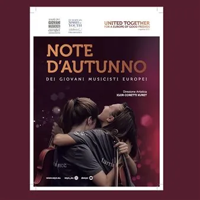

lun 9 nov · dalle 20:30
Note D’autunno dei Giovani Musicisti Europei - Suoni dei balcani
“SUONI DEI BALCANI” CONCERTO DELL’ORCHESTRA SINFONICA DELLA SCUOLA DI MUSICA "DAVORIN JENKO" di Belgrado (Serbia) partner del progetto "ESYO - European Spirit of Youth Orchestra" direttore: M° Nenad Petković 9 NOVEMBRE 2026 Trieste, Sala Luttazzi, Magazzino 26 Porto Vecchio ore…
 Indicazioni
Indicazioni
- Costi e prenotazioni
- Costo non indicato · Prenotazione non indicata
- Programma
- Programma da verificare. Apri la fonte ufficiale per orari e possibili aggiornamenti.
- In caso di maltempo
- Nessuna indicazione specifica pubblicata.
- Note
- Acquisito automaticamente dalla fonte.
L’EVENTO
Descrizione completa
“SUONI DEI BALCANI”
CONCERTO DELL’ORCHESTRA SINFONICA DELLA SCUOLA DI MUSICA "DAVORIN JENKO" di Belgrado (Serbia)
partner del progetto "ESYO - European Spirit of Youth Orchestra"
direttore: M° Nenad Petković
9 NOVEMBRE 2026
Trieste, Sala Luttazzi, Magazzino 26 Porto Vecchio
ore 20.30
Organizzato da:
Scuola per Giovani Musicisti Europei APS – SGME
INGRESSO LIBERO
Concerto della rassegna “NOTE D’AUTUNNO DEI GIOVANI MUSICISTI EUROPEI, parte della stagione “UNITED TOGETHER, for a Europe of Good Friends” 2026.
L’ Orchestra sinfonica della Scuola di musica "Davorin Jenko” è partner del progetto "ESYO - European Spirit of Youth Orchestra".
La Scuola di musica "Davorin Jenko" situata nel municipio belgradese di Rakovica vanta una storia ricca e un percorso di crescita costante. Fondata nel 1951 è oggi una delle istituzioni musicali più grandi e importanti della Serbia, conta oltre 900 allievi ed è un punto di riferimento di rilievo per la didattica musicale giovanile nel panorama di Belgrado e dell'intera Serbia.
Il nome della scuola rende omaggio a Davorin Jenko (1835-1914), celebre compositore sloveno naturalizzato serbo, considerato una figura chiave del romanticismo musicale dell'area. Jenko è noto in particolare per aver composto la musica dell'inno nazionale serbo Bože pravde, oltre ad aver scritto la prima operetta serba (Vračara) e ad aver dato un contributo fondamentale allo sviluppo della vita musicale e corale a Belgrado tra il XIX e il XX secolo.
Il direttore d’orchestra Nenad Petković è una figura chiave legata all'attività orchestrale della Scuola di musica "Davorin Jenko" di Belgrado. In qualità di direttore d'orchestra, è alla guida dell'orchestra sinfonica giovanile e degli allievi della scuola, con la quale si esibisce regolarmente in importanti sale da concerto e in manifestazioni, rassegne e concerti anche a carattere umanitario. Sotto la sua direzione, l'orchestra della scuola affronta un repertorio che spazia da brani classici a composizioni orchestrali e di autori serbi (come Svetomir Nastasijević), offrendo ai giovani talenti l'opportunità di fare esperienza orchestrale e di esibirsi in pubblico.
Il Maestro è anche uno dei direttori stabili della ESYO – European Spirit of Youth Orchestra, prestigioso ensemble sinfonico giovanile europeo fondato nel 1994 dal violinista e direttore triestino Igor Coretti Kuret. L'orchestra riunisce ogni anno i migliori giovani talenti musicali provenienti da diversi Paesi europei con l'obiettivo di promuovere il dialogo, la pace e la cooperazione culturale attraverso la musica.
IL PROGRAMMA
Programma e orari
Appuntamenti raccolti dalle fonti elencate. Dove manca un orario, non è ancora disponibile in questa scheda.
Programma pubblicato
- ore 20.30
INFORMAZIONI UTILI
Prima di partire
- Controllare la fonte prima di partire.
ORGANIZZAZIONE